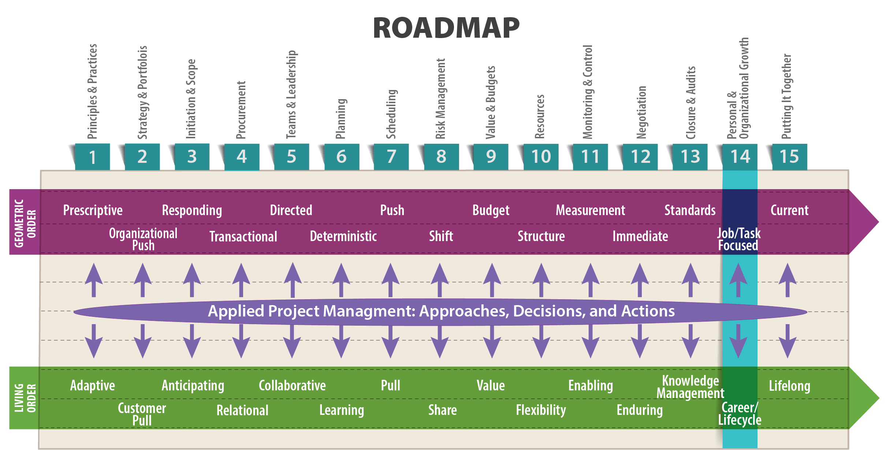

An organization’s ability to learn, and translate that learning into action rapidly, is the ultimate competitive advantage. (Slater 1998, 12)
—Jack Welch, CEO of General Electric, 1981-2001

Objectives
After reading this lesson, you will be able to
The Big Ideas in this Lesson
The word “development” is widely used in business to refer to a process of transformation. In “product development” it refers to the transformation of an idea into a new product. In “real estate development” it refers to the transformation of a piece of property into something of greater value by constructing buildings, creating roads, and so on. Personal and organizational development are also processes of transformation—change that makes a person a more effective project manager, change that makes an organization a more successful company.
Throughout these lessons, you have read about the many ways that dynamic, ever-changing living order affects the work of project managers. Now we’ll consider how these agile, resourceful thinkers embrace the change required to advance their own personal development, as well as the development of their organizations. We’ll also focus on the concept of project management maturity and the maturity models used to measure it. Then we will explore the many ways that learning can make you a better project manager, and the cultural and organizational barriers to effective learning.
Researchers have discovered a lot about the effects of mindfulness, a state of nonjudgemental awareness, on an individual’s ability to learn. Here are a few topics that you might want to explore on your own:
All organizational and personal change starts with learning. But what is learning in the first place? It’s not just acquiring information. According to Daniel H. Kim, it is a process of accumulating both know-how and know-why:
Learning encompasses two meanings: (1) the acquisition of skill or know-how, which implies the physical ability to produce some action, and (2) the acquisition of know-why, which implies the ability to articulate a conceptual understanding of an experience….
For example, a carpenter who has mastered the skills of woodworking without understanding the concept of building coherent structures like tables and houses can’t utilize those skills effectively. Similarly, a carpenter who possesses vast knowledge about architecture and design but who has no complementary skills to produce designs can’t put that know-why to effective use. Learning can thus be defined as increasing one’s capacity to take effective action. (Kim 1993)
Take a moment to think about that: learning is “increasing one’s capacity to take effective action.” That may not be true of all learning—you might want to learn about Roman history, or metalworking simply because it gives you pleasure and deepens your understanding of life in general, not because either pursuit will prepare you for action. But as you plot your professional development, you would be wise to remember that time devoted to learning is a limited resource. So learning that increases your capacity for effective on-the-job action, and that positions you for future assignments with increased responsibility, is your best investment.
According to Morgan W. McCall, Jr., who has written extensively on personal development, that kind of learning is usually the result of hands-on experience. He argues that leaders are made, not born, through the trial and error learning that occurs through actual work: “adversity, challenge, frustration, and struggle lead to change” (1998, xiv). However, despite mountains of research showing that experience is the best teacher, organizations often sabotage their employees’ ability to learn from failure:
The paradox of wanting people to learn from experience, which by definition involves trial and error, yet punishing them when trial resulted in error, highlights a fundamental dilemma for development. That is, for learning to occur, the context must support learning…. At the most basic level, development is directly affected by the organization’s business strategy (what it is trying to achieve) and by its values (what it is willing to do to get there). These organizational issues determine what is desired, what is rewarded, and what is tolerated. (Morgan W. McCall, 58)
As a project manager, you probably can’t control whether your organization’s business strategy supports and values experiential learning, but you can strive to cultivate non-judgmental project teams that allow for learning from experience.
The changing nature of living order ensures that organizations that continue to do what they’ve always done will, sooner or later, find themselves unable to compete in the modern market place. Those that succeed often embrace some form of continuous improvement, a key practice of Lean project management in which organizations focus on improving “an entire value stream or an individual process to create more value with less waste” (Lean Enterprise Institute 2014). Or to put it more simply, they strive to create “a culture of continuous improvement where all employees are actively engaged in improving the company” (Vorne).
The exact form continuous improvement takes in an organization varies depending on the industry, the current state of the market, and so on. But for project-centered organizations, a focus on project management maturity, and the organizational learning that goes along with it, are essential components of any continuous improvement effort. Indeed, as David A. Garvin explains, continuous improvement is impossible without learning:
How, after all, can an organization improve without first learning something new? Solving a problem, introducing a product, and reengineering a process all require seeing the world in a new light and acting accordingly. In the absence of learning, companies—and individuals—simply repeat old practices. Change remains cosmetic, and improvements are either fortuitous or short-lived. (1993)
The term project management maturity refers to the “progressive development of an enterprise-wide project management approach, methodology, strategy, and decision-making process. The appropriate level of maturity will vary for each organization based on its specific goals, strategies, resource capabilities, scope, and needs” (PMSolutions 2012). Before you can assess an organization’s overall project management maturity, it’s helpful to have an objective standard of comparison to help you understand the context in which you are operating. In other words, you need a project maturity model, also known as a capability maturity model. A maturity model is a set of developmental stages that can be used to evaluate an organization’s state of maturity in a particular domain. More specifically, according to Becker, Knackstedt, and Poppelbuss, a maturity model
represents an anticipated, desired, or typical evolution path of these objects shaped as discrete stages. Typically, these objects are organizations or processes. The bottom stage stands for an initial state that can be, for instance, characterized by an organization having little capabilities in the domain under consideration. In contrast, the highest stage represents a conception of total maturity. Advancing on the evolution path between the two extremes involves a continuous progression regarding the organization’s capabilities or process performance. (2009)
Among other things, a maturity model offers
The first widely used maturity model, the Capability Maturity Model (CMM), was developed in the software industry in the late 1980’s by the Software Engineering Institute (SEI) at Carnegie Mellon University, working in conjunction with the United States Department of Defense. Mary Rouse describes the five levels of CMM maturity as follows:
Since the development of the CMM, over a hundred maturity models have been developed for the IT industry alone (Becker, Knackstedt and Poppelbuss 2009). Meanwhile, other industries have developed their own models, each designed to articulate the essential stages of maturity for a particular type of organization. Developing and implementing proprietary maturity models, and assessment tools to determine where an organization falls on the maturity spectrum, is a specialty of countless business consulting firms. Around the world, the most widely recognized maturity model is the Organizational Project Management Maturity Model (OPM3), developed by the Project Management Institute. The OPM3 is designed to help an organization support its organizational strategy from the project level on up through the portfolio and program levels. You can read more about it here: https://www.pmi.org/learning/library/grow-up-already-opm3-primer-8108.
The ultimate goal of any maturity model is to help an organization change where change will introduce clear benefits. According to Joseph A. Sopko, “research from many sources continues to show that higher organizational maturity is synonymous with higher performance” (2015). As maturity models become more widely used, project-based organizations should factor in
the market value of being recognized as a reliable supplier. If the organization’s maturity is lower than customer or market expectations, it may be viewed as a high-risk supplier that would add performance risk to its customers’ programs. And, obviously, if the organization’s maturity is lower than that of its competitors, it will lose competitive advantage since higher OPM maturity has been correlated with reliably delivering to plan and meeting customer expectations.(Sopko 2015)
Many projects deliver tangible outcomes, such as physical artifacts, buildings, and infrastructure. Others produce software, reports, or other types of output. But all projects create knowledge. Indeed, this knowledge can end up being more valuable to the organization than any short-term financial gain. However, because intellectual capital is longer-term and intangible, it is often underappreciated at the point of creation.
An organization that is fully committed to project management maturity does not make this mistake. On the contrary, it cultivates a culture of systematic knowledge management, which William R. King defines as follows:
Knowledge management is the planning, organizing, motivating, and controlling of people, processes, and systems in the organization to ensure that its knowledge-related assets are improved and effectively employed. Knowledge-related assets include knowledge in the form of printed documents such as patents and manuals, knowledge stored in electronic repositories such as a “best-practices” database, employees’ knowledge about the best way to do their jobs, knowledge that is held by teams who have been working on focused problems, and knowledge that is embedded in the organization’s products, processes, and relationships.
The processes of KM involve knowledge acquisition, creation, refinement, storage, transfer, sharing, and utilization. The KM function in the organization operates these processes, develops methodologies and systems to support them, and motivates people to participate in them.
The goals of KM are the leveraging and improvement of the organization’s knowledge assets to effectuate better knowledge practices, improved organizational behaviors, better decisions, and improved organizational performance.
Although individuals certainly can personally perform each of the KM processes, KM is largely an organizational activity that focuses on what managers can do to enable KM’s goals to be achieved, how they can motivate individuals to participate in achieving them, and how they can create social processes that will facilitate KM success. (2009)
When done right, knowledge management leads to organizational learning, or the process of retaining, storing, and sharing knowledge within an organization. More than the sum of the knowledge of all the members of the organization, organizational knowledge “requires systematic integration and collective interpretation of new knowledge that leads to collective action and involves risk taking as experimentation” (Business Dictionary n.d.).
Organizational learning as we define it here is a positive thing, a source of renewal for successful companies. But not all learning leads to good outcomes. Haphazard learning that occurs without any conscious evaluation can lead to bad habits and half-baked notions about best practices. As Daniel H. Kim explains, learning is an essential function of all organizations, but it’s not all productive:
All organizations learn, whether they consciously choose to or not—it is a fundamental requirement for their sustained existence. Some firms deliberately advance organizational learning, developing capabilities that are consistent with their objectives; others make no focused effort and, therefore, acquire habits that are counterproductive. Nonetheless, all organizations learn. (1993)
In Lesson 13, we discussed some important ways to contribute to organizational learning—capturing lessons learned during project closure, and taking part in communities of practice. These and other practices can help transform a company into a learning organization, which David A. Garvin defines as “an organization skilled at creating, acquiring, and transferring knowledge, and at modifying its behavior to reflect new knowledge and insights” (1993). Note that knowledge is only half of the equation. A true learning organization responds to knowledge by modifying its behavior:
This definition begins with a simple truth: new ideas are essential if learning is to take place. Sometimes they are created de novo, through flashes of insight or creativity; at other times they arrive from outside the organization or are communicated by knowledgeable insiders. Whatever their source, these ideas are the trigger for organizational improvement. But they cannot by themselves create a learning organization. Without accompanying changes in the way that work gets done, only the potential for improvement exists. (Garvin 1993)
The authors of Becoming a Project Leader worked with several companies (Procter & Gamble, Motorola, NASA, Skanska and Turner, and Boldt) to create communities of practice. These organizations identified their best project managers to take part in a forum, which would meet 2-4 times per year for a day or two per meeting. Forum members submit stories before meeting, and a handful of those stories are then selected for discussion. At the meeting, stories are discussed and reflected upon and then eventually published and shared with the entire organization.
Denise Lee extended the community of practice concept with her Transfer Wisdom Workshops at NASA to help serve “NASA’s practitioners who were not members of the community of practice and were located at NASA centers throughout the US.” As stated by Denise, “Our aim was to help the men and women who work on NASA projects step away from their work for a moment in order to better understand it, learn from it, and then share what they learned with others” (2003).
The concept of the learning organization was first popularized by Peter Senge in the early 1990’s in his book The Fifth Discipline: The Art and Practice of the Learning Organization. Since then many researchers have investigated the role of learning in organizations. After over two decades of study and experimentation, the general consensus is that, to be effective, learning needs to be targeted at specific goals. Most importantly, according to Shlomo Ben-Hur, Bernard Jaworski, and David Gray, it should support the organization’s strategy:
Too many corporate learning and development programs focus on the wrong things. A better approach to developing a company’s leadership and talent pipeline involves designing learning programs that link to the organization’s strategic priorities…. The word learning, which has largely replaced training in the corporate lexicon, suggests “knowledge for its own sake.” However, to justify its existence, corporate learning needs to serve the organization’s stated goals and should be based on what works. (Ben-Hur, Jaworski and Gray 2015)
This is a good time to reflect back on Daniel H. Kim’s definition of learning as “increasing one’s capacity to take effective action.” It’s one thing for an individual to translate learning into effective action. It’s quite another for an organization made up of hundreds or thousands of individuals to accomplish the same thing. Despite millions of dollars invested in learning initiatives, organizations struggle to become learning organizations. In their article “Why Organizations Don’t Learn,” Francesca Gino and Bradley Staats discuss some barriers to learning that include 1) an excessive focus on success that prevents people from learning from failure, 2) and a tendency to rely on perceived experts rather than on the people who are on the front lines, dealing with and learning about a problem (2015).
Another barrier to organizational learning is a tendency to view it as simply the acquisition of information (the know-how), without giving equal weight to the big-picture understanding (the know-why) that comes from actual experience at the individual, team, project, and corporate level. As a result, organizations as a whole, and the individuals within them, fail to realize that the best way to learn about a job is often by actually doing the job. It’s at the project level that individuals achieve growth and learning, and eventually succeed in reaching their goals.
As you look ahead for ways to expand your project management skills and knowledge, put learning about sustainability at the top of your list. First of all, you need to figure out where you and your organization stand on questions of sustainability. These days, organizations like to make big claims about their commitment to preserving natural resources, but in reality, their efforts often amount to little more than earnest public relations campaigns. In fact, they have no real interest in overturning the dominant paradigm, which sees the natural world solely as a supply of resources for human use.
To come to terms with your ideas on sustainability, you need to understand your personal definition of the kind of value you want to create as an engineer. In his book The New Capitalist Manifesto, Umair Haque introduced the idea of thin and thick value. Thin value is consumerist (think McMansions and Hummers); often generated “through harm to or at the expense of people, communities, or society”; unsustainable because it is created with no regard to the environment; and, according to Haque, ultimately meaningless because “it often fails to make people, communities, and society durably better off in the ways that matter to them most” (2011, 19-20). By contrast, thick value is everything thin value is not. It is sustainable and meaningful over the long term, helping support communities and preserving the environment while allowing a business to generate a profit. Haque points to companies like Wal-Mart, Nike, and Starbucks as examples of thick-value enterprises.
But let’s assume you and your organization share a very real commitment to sustainability. You still need to figure out the limits of your commitment in the face of financial realities. As a way of assessing individual or organizational approaches to sustainability, Robert O. Vos reinterpreted Haque’s ideas, defining thin and thick versions of sustainability. Thin sustainability views financial capital and natural capital (that is, natural resources) as equally important. It seeks “to ensure that the overall value of natural and financial capital must be undiminished for future generations, even if the mix of the two is allowed to change.” It assumes that “economic growth is highly desirable and has infinite potential; growth is assumed to occur due to the capacity of technology, through human ingenuity, to make more with less and…to make substitutes for destroyed natural capital” (2007). In other words, thin sustainability is buoyed by a faith in the power of technology to make up for the damage humans inflict on the environment.
Thick sustainability takes a harder line, viewing any diminution of natural capital as unacceptable. Thick versions of sustainability look to redefine “how we measure economic growth; they may look to see reductions in growth rate or even reductions in the size of the economy. To mitigate this definition, thicker versions of sustainability often differentiate between growth and development. The focus here is on new ways of measuring the quality of life or of products, rather than as monetary values of economic output” (Vos 2007).
So where do you stand on the thin/thick spectrum? And how about your organization? As you work to develop your personal project management maturity, you’ll need to think long and hard about these questions. To learn more, you can start by reading Becoming Part of the Solution: The Engineers Guide to Sustainable Development, by Bill Wallace. He encourages engineers to radically transform the way they work:
Instead of finding ways to extract resources faster, we can be inventing and applying new technologies that use less material and energy. Instead of finding ways to sell more products, we can help clients get more service per unit of product. We can find ways to use natural systems to serve our needs for lighting, heating, and cooling. We can design buildings and other structures for flexibility in use, reuse, and recyclability, thereby reducing life cycle costs.
Pursuing this course will bring about new engineering challenges, challenges that will force us to work smarter and call upon a broad set of skills and resources. These are the sorts of challenges that can attract young people into engineering, showing them how they can apply what they learn to make a difference in the world instead of following old and discouraging pathways. (2005, ix)
The ability to communicate effectively is essential in every part of an engineer’s job. But it is especially important in sustainable endeavors, which typically require a great deal of interaction between an organization and the general public. Such projects often hinge on the ability to get a wide array of stakeholders on board. Job one, then, is explaining exactly how your project will help society and protect the environment.
Michael Mucha, Chief Engineer and Director for the Madison Metropolitan Sewerage District, and the current Chair for ASCE’s Committee on Sustainability, points out that Envision, a sustainability rating system for civil infrastructure, factors communication into its calculations:
Whereas LEED is a sustainability rating system for habitable, vertical infrastructure. Envision is a rating system for horizontal, non-habitable infrastructure, like roads, wetlands restorations, airports, and water treatment facilities. It’s a way to evaluate how sustainable a project is. One measure for the Envision rating is how well you communicate with the public about the project. That illustrates the importance of communication in sustainable engineering. (2017)
Taking the time to understand your organization’s project management maturity level offers a helpful corollary effect: it allows you to see your own personal development within a broader context, rather than seeing yourself as an isolated entity. You can’t really begin to pursue your larger professional goals until you understand where you fit into the big picture. If you find yourself working for a company with only the lowest level of project management maturity, you will likely have to lead the way to more effective project management processes, educating yourself in the process. If you work at a company with a well-established project management infrastructure, you will have more opportunities to learn from colleagues and upper management.
Ashwini Varma, principal group engineering manager at Microsoft, credits her desire to solve problems as a key to her success as a project manager. In an interview with Craig Lee, principal engineering manager at Microsoft, she shared some advice for maturing into an effective project manager.
I’ve always had an innate drive to solve problems. When I see chaos, my first reaction is to organize. When I see pain, I want to heal it. This tendency made it natural for me to seek out roles in completely new areas, with new teams and new management. That wasn’t easy, but it gave me confidence to take on even more challenging work.
In the process, I learned that you can’t force your will on a project team. You can’t start telling people who have already been working together what you want them to do now. Instead, you need to work deeply with a team, learn the technology, and develop a realistic understanding of what is possible. Only then can you start to comprehend how to build a sustainable, realistic plan, and only then can you establish your credibility with the team.
Over time I also learned the importance of hiring the right team for the right problem. You can’t underestimate the importance of building the right team. The fact is, engineers are not interchangeable. You need to determine what you need to succeed, then hire engineers who can do that work.
Of course, once you have the team you need, it’s essential to set up monitoring systems that keep you informed on their progress. I like to have multiple feedback loops that provide a picture of the project from different angles, and I encourage other managers on my teams to do the same thing. (2018)
Whatever your situation, you need to commit to your own personal development. Here are some tips to help you pursue growth as a confident, competent project manager, and a leader in your organization.
Perhaps the most crucial skill of all when it comes to personal growth is learning how to create a learning environment wherever you are. There is no pat formula, but there are some common-sense actions that might help. Treat people in ways that make them want to coach you, support you, give you feedback, and allow you to make mistakes. Seek out feedback on your impact, and information on what you might do differently. Experiment. Take time to reflect, absorb, and incorporate. (Morgan W. McCall 1998)
In Becoming a Project Leader, Terry Little describes three types of mentorship. First is formal mentoring programs within organizations, which almost never work. As Terry explains, “Many so-called leaders fail to recognize that mentoring is as important as anything they do and more important than most of what they do.” The larger problem with formal mentoring, however, is the fact that mentees “are incentivized by external reward rather than a desire to improve and grow.” Next is informal mentoring, in which someone more senior in the company chooses mid-level managers. Terry’s approach: “I meet with each person I mentor regularly—nominally once a quarter. I also meet with everyone I mentor as a group once each six months. In between, I send articles or suggested readings, as well as some words of counsel that come to me. To me and to them it’s critical that these things be predictable and personal—something they can count on and that means something to them as diverse individuals.”
The final type of mentorship is informal-informal mentoring. Terry explains: “As we progress up the career chain, our behaviors become more and more visible to an increasingly larger number of people. We are not conscious of it, but others take their cues from those higher up the bureaucratic pyramid than they are. They observe our behavior and make judgments about it. Is it something worth emulating? If so, how can I adapt that behavior to my unique personality? Is it something to avoid? If so, how do I sensitize myself so that I don’t do it unconsciously? Much of what we turn out to be as individuals derives from what we have learned from observing others—not from what others have told us, what we have read and so forth. When others seek to emulate us, we have mentoring at its finest. But when one sees basic leadership principles working effectively in real life, it can have a profound effect” (Little 2004).
In his book Creativity, Inc., Ed Catmull, president of Pixar Animation and Disney Animation, describes the project management techniques that brought to life animation classics like Toy Story and The Incredibles. It all comes down to embracing the risks and uncertainties that allow true creativity to flourish:
There are many blocks to creativity, but there are active steps we can take to protect the creative process…. The most compelling mechanisms to me are those that deal with uncertainty, instability, lack of candor, and the things we cannot see. I believe the best managers acknowledge and make room for what they do not know—not just because humility is a virtue but because until one adopts that mindset, the most striking breakthroughs cannot occur. I believe that managers must loosen the controls, not tighten them. They must accept risk; they must trust the people they work with and strive to clear the path for them; and always, they must pay attention to and engage with anything that creates fear. Moreover, successful leaders embrace the reality that their models may be wrong or incomplete. Only when we admit what we don’t know can we ever hope to learn it. (2014, xv-xvi)
It might seem obvious that creativity is essential to entertainment companies like Pixar and Disney. But Catmull argues that protecting the creative process is essential in all types of organizations. He encourages managers to actively safeguard their teams’ creative abilities, thereby creating a safe space for team members to take risks, by doing the following:
Create a flat communication structure in which any person in the organization can talk to any other person, without regard to rank in the larger organizational structure. And strive for candor in project discussions. “Candor is forthrightness or frankness…. The word communicates not just truth-telling but a lack of reserve…. A hallmark of a healthy creative culture is that its people feel free to share ideas, opinions, and criticisms. Lack of candor, if unchecked, ultimately leads to dysfunctional environments” (2014, 86).
Constantly look for hidden problems, and don’t fall for the false notion that monitoring data can point out every possible issue. “‘You can’t manage what you can’t measure’ is a maxim that is taught and believed by many in both business and education sectors. But in fact, the phrase is ridiculous—something said by people who are unaware of how much is hidden. A large portion of what we manage can’t be measured, and not realizing this has unintended consequences. The problem comes when people think that data paints a full picture, leading them to ignore what they can’t see. Here’s my approach: Measure what you can, evaluate what you measure, and appreciate that you cannot measure the vast majority of what you do”(2014, 219-220).
Here are some ideas to help you help your company mature into a more effective organization:
Becker, Jorg, Ralf Knackstedt, and Jens Poppelbuss. 2009. “Developing Maturity Models for IT Management: A Procedural Model and its Applications.” Business & Information Systems Engineering 1 (3): 213-222. doi:10.1007/s12599-009-0044-5.
Ben-Hur, Shlomo, Bernard Jaworski, and David Gray. 2015. “Aligning Corporate Learning with Strategy.” MITSloan Management Review Fall 2015. http://sloanreview.mit.edu/article/aligning-corporate-learning-with-strategy/?use_credit=688d7d9df0f0255d120a667a2c469f8a.
Business Dictionary. n.d. “Organizational Learning.” BusinessDictionary.com. Inc. WebFinance. http://www.businessdictionary.com/definition/resource-management.html.
Catmull, Ed, and Amy Wallace. 2014. Creativity, Inc. New York: Random House.
Curlee, Wanda. 2015. “Startups and Project Management: They Aren’t Opposites.” PM. April 23. https://www.projectmanagement.com/blog-post/12961/Startups-and-Project-Management–They-Aren-t-Opposites.
Garvin, David A. 1993. “Building a Learning Organization.” Harvard Business Review July-August. https://hbr.org/1993/07/building-a-learning-organization.
Gino, Francesca, and Bradley Staats. 2015. “Why Organizations Don’t Learn.” Harvard Business Review November. https://hbr.org/2015/11/why-organizations-dont-learn.
Haque, Umair. 2011. The New Capitalist Manifesto: Building a Disruptively Better Business. Cambridge: Harvard Business Review Press.
Kim, Daniel H. 1993. “The Link between Individual and Organizational Learning.” MITSloan Management Review Fall 1993. http://sloanreview.mit.edu/article/the-link-between-individual-and-organizational-learning/?use_credit=98b418276d571e623651fc1d471c7811.
King, William R. 2009. “Knowledge Management and Organizational Learning.” Edited by William R. King. Annals of Information Systems (Springer) 4: 3-14.
Laufer, Alexander, Terry Little, Jeffrey Russell, and Bruce Maas. 2018. Becoming a Project Leader: Blending Planning, Agility, Resilience, and Collaboration to Deliver Successful Projects. New York: Palgrave Macmillan.
Lean Enterprise Institute. 2014. Lean Lexicon, Fifth Edition. Edited by Chet Marchwinski. Cambridge, MA: Lean Enterprise Institute.
Little, Terry. 2004. “Meaningful Mentorship.” Ask Magazine, 20-21.
Morgan W. McCall, Jr. 1998. High Flyers: Developing the Next Generation of Leaders. Boston: Harvard Business School Press.
Mucha, Michael, interview by Ann Shaffer. 2017. Technical and Adaptive Problems (December 11).
PMSolutions. 2012. “What is project management maturity?” PMSolutions. August 16. http://www.pmsolutions.com/resources/view/what-is-project-management-maturity/.
Rouse, Margaret. 2007. “Capability Maturity Model (CMM).” TechTarget. April. http://searchsoftwarequality.techtarget.com/definition/Capability-Maturity-Model.
Select Business Solutions. n.d. “What is the Capability Maturity Model? (CMM).” Select Business Solutions. Accessed July 1, 2018. http://www.selectbs.com/process-maturity/what-is-the-capability-maturity-model.
Slater, Robert. 1998. Jack Welch & The G.E. Way: Management Insights and Leadership.
Sopko, Joseph A. 2015. “Organizational Project Management: Why Build and Improve?” Project Management Institute. http://www.pmi.org/~/media/PDF/learning/organizational-project-management-build-improve.ashx.
Varma, Ashwini, interview by Craig Lee. 2018. Becoming an Effective Project Manager (September 27).
Vorne. n.d. “Kaizen.” LeanProduction. Accessed July 1, 2016. http://www.leanproduction.com/kaizen.html.
Vos, Robert O. 2007. “Perspective: Defining sustainability: a conceptual orientation.” Journal of Chemical Technology and Biotechnology 82 (4): 334-339. doi:https://onlinelibrary.wiley.com/doi/abs/10.1002/jctb.1675.
Wallace, Bill. 2005. Becoming Part of the Solution: The Engineers Guide to Sustainable Development. Washington, D.C.: American Council of Engineering Companies.